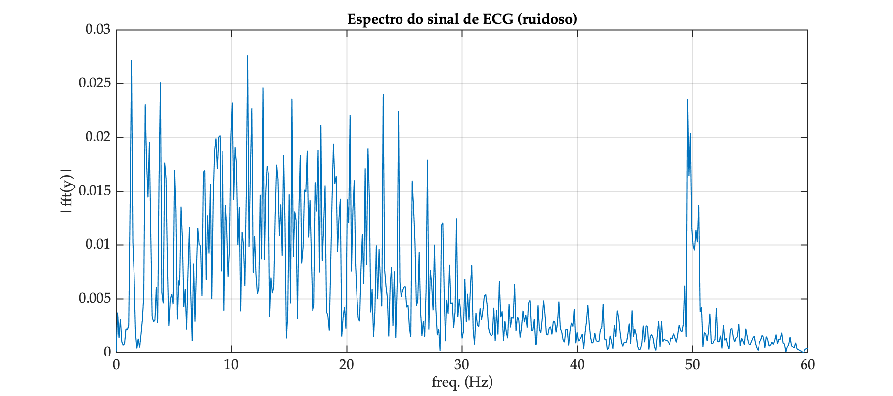
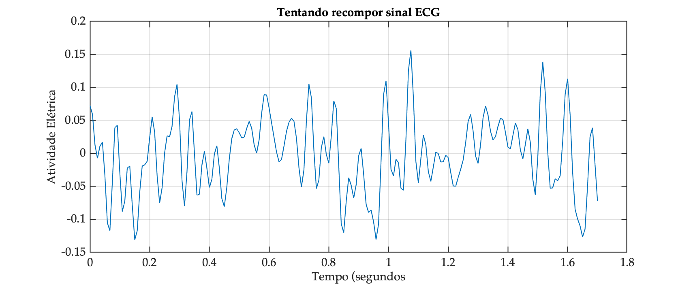

FFT de ECG
Resposta exercício explorando FFT de sinal de ECG bruto amostrado à 120 Hz, arquivo: noisy_ecg.txt
xxxxxxxxxx>> dir *.txtaula_23042024.txt noisy_ecg.txt signalData.txt nivel.txt problema_nivel_rio.txt >> load noisy_ecg.txt>> size (noisy_ecg)ans = 6000 1>> % Arquivo com 6000 mil amostras>> fs=120;>> T=1/fsT = 0.0083333>> t_fim=(length(noisy_ecg)-1)*Tt_fim = 49.992>> % criando vetor tempo, obbedecendo taxa amostragem do sinal>> t=0:T:t_fim;>> size(t)ans = 1 6000>> plot(t,noisy_ecg)>> xlabel('Tempo (segundos)');>> title('Sinal de ECG (com ruído)')>> ylabel('Atividade Elétrica')>> gridDiagrama temporal do sinal original:

Em oportunidade anterior, foram mostradas as primeiras 1000 amostras, ou seja, nos primeiros 8,325 segundos e resulta:
xxxxxxxxxx>> xlim([0 (1000-1)*T])>> (1000-1)*Tans = 8.325>> grid
Realizando a FFT sobre estre trecho do sinal de ECG vamos obter:
xxxxxxxxxx>> y=noisy_ecg(1:1000); % separando uma parte de todo sinal no vetor y>> length(y) % melhor que seja de comprimento par (dividir especttro depois)ans = 1000>> % Isto significa que nossa FFT vai ter 1000 pts, metada é "refletido">> L=length(Y)L = 1000>> P2=abs(Y/L); % re-escalona magnitudes em função de L>> P1=P2(1:L/2+1); % isolando primeira metade do espectro>> f=fs/L*(0:(L/2)); % cria vetor (eixo) das frequências>> size(f)ans = 1 501 >> size(P1)ans = 501 1>> title('Espectro do sinal de ECG (ruidoso)')>> xlabel("freq. (Hz)")>> ylabel('|fft(y)|')>> grid>> fs/2 % Freq max da FFT (conferindo)ans = 60E temos o gráfico:

E percebe-se o ruído presente na frequênica de 50 Hz (pico nesta frequência). Motivo pelo qual se faz necessário aplicar um filtro passa-baixas ou Notch para atenuar este componente -- ver Filtro Notch sobre sinal de ECG (projeto usando alocação pólo-zero).
Por curiosidade, os componentes frequenciais mais presentes (limiar de magnitude 65% da magnitude máxima registrada) segue na tabela abaixo:
| # | Freq (Hz) | Amplitude | % | Fase (graus) |
|---|---|---|---|---|
| 1 | 1.32 | 0.02715 | 98.4 | 175.63 |
| 2 | 2.52 | 0.02307 | 83.5 | -150.45 |
| 3 | 2.88 | 0.01956 | 70.8 | 76.18 |
| 4 | 3.84 | 0.02509 | 90.9 | 68.73 |
| 5 | 8.52 | 0.01867 | 67.6 | 77.54 |
| 6 | 8.64 | 0.01988 | 72.0 | -60.39 |
| 7 | 8.88 | 0.02002 | 72.5 | -158.07 |
| 8 | 9.00 | 0.02016 | 73.0 | -14.22 |
| 9 | 9.24 | 0.01876 | 68.0 | 56.52 |
| 10 | 9.96 | 0.01996 | 72.3 | -128.88 |
| 11 | 10.08 | 0.02323 | 84.2 | 87.36 |
| 12 | 10.32 | 0.01908 | 69.1 | -90.13 |
| 13 | 11.40 | 0.02761 | 100.0 | 10.28 |
| 14 | 11.76 | 0.02270 | 82.2 | 145.32 |
| 15 | 12.72 | 0.02461 | 89.1 | -81.56 |
| 16 | 14.52 | 0.01839 | 66.6 | -169.36 |
| 17 | 15.24 | 0.02358 | 85.4 | 8.50 |
| 18 | 15.96 | 0.01839 | 66.6 | -18.03 |
| 19 | 16.56 | 0.01877 | 68.0 | -91.51 |
| 20 | 17.52 | 0.01885 | 68.3 | 92.98 |
| 21 | 17.76 | 0.02112 | 76.5 | 104.09 |
| 22 | 18.84 | 0.01941 | 70.3 | -7.90 |
| 23 | 20.28 | 0.02209 | 80.0 | 160.04 |
| 24 | 21.84 | 0.01897 | 68.7 | -165.95 |
| 25 | 23.16 | 0.02404 | 87.1 | 114.10 |
| 26 | 24.48 | 0.02245 | 81.3 | 23.52 |
| 27 | 49.56 | 0.02354 | 85.3 | 16.01 |
| 28 | 49.80 | 0.02039 | 73.8 | -126.86 |
Um sinal típico possui fortes componentes nas frequências de: Hz (limiar de 80%).
Se estes componenentes fossem usados para tentar recompor o sinal, no intervalo entre: segundos:
x
>> size(tt)ans = 1 205>> u=length(tt)u = 205>> length(ff)ans = 12>> ff(12)ans = 49.56>> y2=ones(length(tt),length(ff)-1); % linhas x colunas == tempo x y(t)|freq>> y2(:,1)=g(1)*sin(phase(1)+2*pi*ff(1)*tt(1,:));>> for u=1:length(ff)-1, y2(:,u)=g(u)*sin(phase(u)+2*pi*ff(u)*tt(1,:)); end>> y3=zeros(length(tt),1);>> for u=1:length(ff)-1, y3(:,1)=y3(:,1)+y2(:,u); end>> figure; plot(tt,y3)>> xlabel("Tempo (segundos")>> ylabel('Atividade Elétrica')>> title('Tentando recompor sinal ECG')>> grid>> figure; surf(y2)>> xlabel("freq. (Hz)")>> ylabel("Tempo (segundos")>> zlabel('y(t)')O que rende:

Ou isolando o gráfico de associado com cada uma das 11 frequêncisa usadas para tentar recompor o sinal:

Nota-se que apenas 12 componentes frequenciais não foram suficientes para recompor o sinal.
Obviamente este sinal, para ser recomposto, necessitaria trabalhar com mais componentes frequenciais.
🌊 Fernando Passold 📬 ,